115 recetas con calorías y macros aproximados
Toca el corazón de cualquier receta para guardarla aquí.
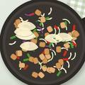
Alambre de Pollo con Panela Dorada320 kcal · 20 min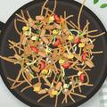
Pad Woon Sen (Fideos Salteados)460 kcal · 25 min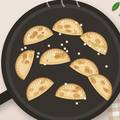
Dumplings de Pollo en Disco de Trigo320 kcal · 17 min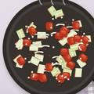
Dakgalbi (Pollo Picante Coreano)310 kcal · 18 min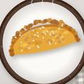
Kai Jeow (Omelette Tailandés)280 kcal · 10 min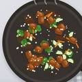
Pollo Teriyaki315 kcal · 20 min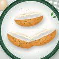
Panqueques de Zanahoria Rellenos de Pollo y Queso470 kcal por porción · 35 min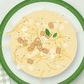
Pasta Carbonara con Pollo520 kcal · 25 min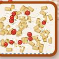
Pasta Cremosa con Pollo365 kcal por porción · 40 min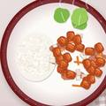
Pollo Agridulce Suave330 kcal · 25 min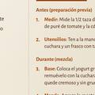
Salsa Burger / Aderezo Mil Islas20 kcal por porción (2 cdas) · 5 min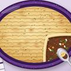
Pastel de Papa y Carne245 kcal por porción · 40 min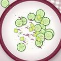
Ensalada de Pepino360 kcal · 10 min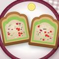
Tostadas de Atún con Aguacate455 kcal · 10 min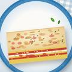
Lasaña de Atún y Queso Panela Sin Harina350 kcal · 20 min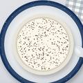
Mug Cake Tiramisú280 kcal · 10 min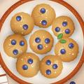
Bocados de Arándanos y Queso Cottage160 kcal por porción · 15 min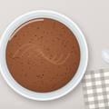
Mousse de Cacao y Proteína110 kcal · 5 min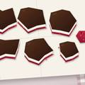
Bark Helado Cheesecake de Frutos Rojos285 kcal · 45 min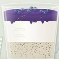
Tazón Mousse Cheesecake de Arándanos215 kcal · 15 min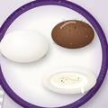
Mochis Rellenos de Cheesecake Proteico195 kcal · 25 min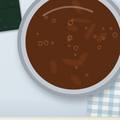
Salsa Umami Casera10 kcal por uso · 10 min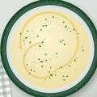
Salsa Proteica de Yogurt y Mostaza35 kcal por porción · 5 min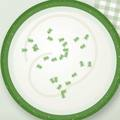
Aderezo Cremoso de Limón y Eneldo35 kcal · 5 min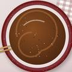
Salsa para Salteado Estilo Oriental30 kcal · 3 min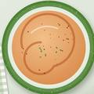
Aderezo Proteico de Chipotle40 kcal · 5 min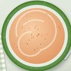
Salsa Cremosa Cajún con Miel70 kcal · 5 min